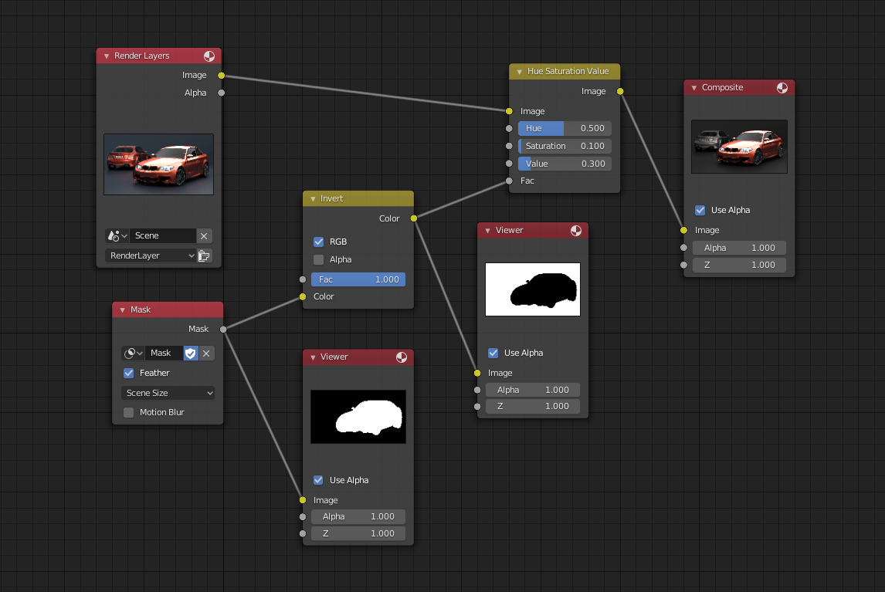

介绍¶
遮罩可以在"图像"和"视频片段"编辑器中创建，使用方法为将标题中的模式更改为“遮罩”。这将向编辑器面板添加各种工具和属性，同时隐藏与遮罩交互不需要的其他工具和属性。
遮罩有很多用途。它们可以用于视频运动跟踪的工作流，以屏蔽或影响影片中的特定对象。它们可用于手动旋转，将特定对象从画面中提出，或作为绿色屏幕键控的范围控制蒙版。遮罩相对电影片段来说是一个独立的的特定影像，因此它们也可以用于在合成器中创建运动图形或其他效果。

在合成器使用遮罩节点孤立(就是将需要的元素扣像)目标。¶
虽然 “视频剪辑编辑器” 和“图像编辑器” 用于编辑遮罩，但“合成器”和"图像序列”仅使用已创建的遮罩。
遮罩可以通过时间来驱动，这样他们就可以从镜头中跟踪一些物体，例如一个正在奔跑的演员。这可以通过“形态键”或父子遮罩来追踪标记来实现效果。
遮罩数据块类型¶
遮罩数据块类型包含多个遮罩层和样条线。它们是用于掩蔽目标的最高级控制级。遮罩可以在不同的地方重用，并为它们所包含的所有实体保存全局参数。